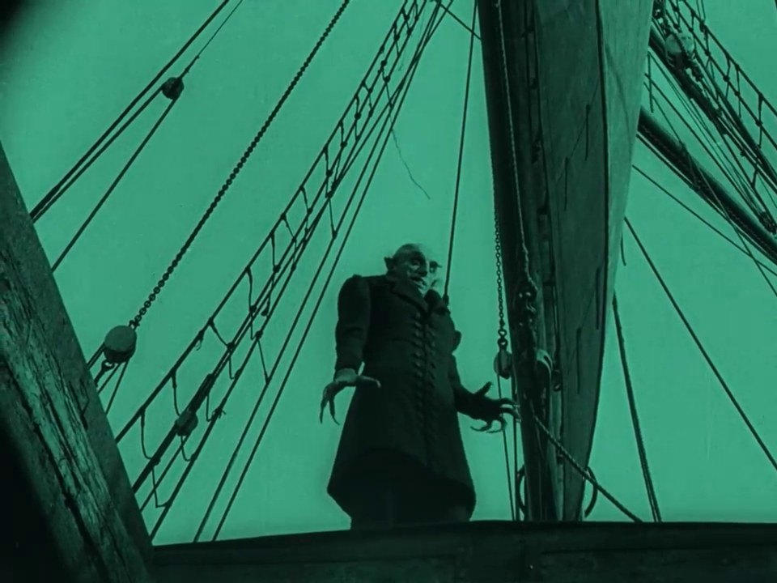

Nosferatu, frame at 1:00:36
F. W. Murnau · 1922 · Silent film, tinted in this copy (frame)
Free to use
The plague rats on the ship were not in Bram Stoker's novel. The screenwriter Henrik Galeen added them, and Prana Film made the film without buying the rights. Conrad Veidt was offered the part of Orlok and turned it down for scheduling reasons, so it went to Max Schreck, then unknown. The Transylvanian scenes were shot on location in northern Slovakia, including the High Tatras and Orava Castle.